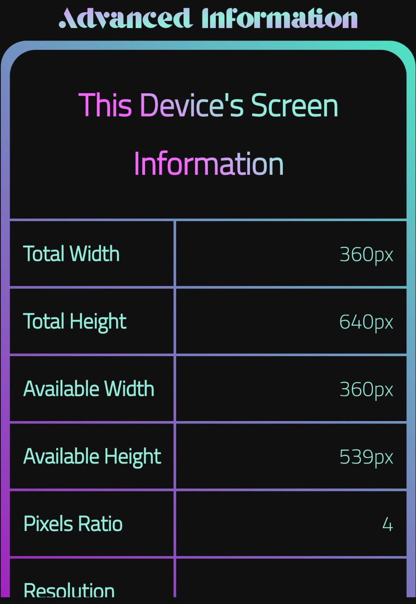

Table of Content
In this article, you will learn nearly every thing you need to know about SiZillion. It will start explaining some of the app fundamentals. Then it will go a little deeper with the main panels, text inputs, and buttons. After that, it will describe the advanced or extra things in the site.
Note: the images were taken from an older version. Anyhow, all the texts remain the same;
This single page would be enough to teach everything in SiZillion. After reading this article, you will understand how it works and what should it does for you. You may encounter some troubles around the app, so feel free to tell me about it. If you are a developer, you can contribute on the project at github, but read the Contribution Conditions from here.
SiZillion is a full static website that works with only HTML, CSS, and Javascript. It means that nothing will be uploaded to the server. Some developers use Node.js (A language that uses Javascript to upload information to the server), but this one doesn't. This also means that you can download it from github and never bring another thing (such as website servers known as "Localhost" or installing python). It will directly work with from the browser.
SiZillion works on taking your web-page temporarily to test it in the top panel. It accepts offline, but this doesn't mean I will upload you files. Everything will be save with you. In addition, you can check the Privacy Policy page for more information about your personal privacy, and how I protect you.
This app works on your file using something called "iframe" which holds your page. Then you can use the sliders or the text inputs to control the width (wideness) of the iframe to be like the screens available in the world. Not only the width of the screens, but also the height (tallness) of the screen. This means that you will be able to test your web-page and make it fully responsive.
The step-by-step guide will go through the app from the first time you open it until the moment you test your page professionally. You will find everything provided well at this page, so go with it step by step until the end, and you you feel comfortable using SiZillion.
Figure 1
By looking at Figure 1, you will notice that you have to add a URL. The URLs are the ones used to direct the browser to your website. There are many types of URLs and the most common ones are mentioned below.
NOTE: take care of making mistakes with writing the URL like forgiving adding the colon ":" after http or never adding the dots before the com or after the www.
All types of url mentioned are allowed to be used, but the file extension wasn't really clarified, so some are allowed, but the others aren't.
Allowed once are...
And some are not allowed such as...
If you need to enter a URL, just go to the browser's top bar and copy what is in there and paste it in SiZillion. All should work well. If you got any trouble, you can report it to MKebsi. After entering it, click on the Done button to see your page on the main container.
NOTE: All the opened panels have this small x.
it allows you to close the window without choosing
any of the options.
Figure 2
After clicking on the Done button, you will see your page in the main container as shown in Figure 2. There, you will have your web-page inside the violet box (Number 1).
From there, you will be able to change its width and height as will be described below. There are two containers to hold your page.
Below the web-page container, there is a small box called "Page View Type" (Number 3) which tells you what is the kind of device your web-page is tested on (whether it's a smart watch, phone, tablet, laptop, or PC monitor). This one helps you determine the device your website needs, and how to make it better.
Figure 3
Looking at Figure 3, you will know that they are two input fields (Number 5). They will control your page's width (wideness) and height (tallness). The Secondary Container won't be effected with the values add to these inputs. The text next to them (Number 6) tells you which one is the width, and which is the height.
The text on the top (Number 4) is the one that tells you which of the containers you are resizing. Clicking on it won't do anything as it is only a header (title).
Figure 4
The other ones Figure 4 are nearly the same, but their main purpose is to resize The Secondary Container (Number 2). Each one can be used separately, They are, as mentioned before, made for giving the developers the full accessibility to test their web-pages professionally.
NOTE: For experts, if you set the width of The Secondary Container the same as the one for The Main Container, you will notice the difference in the size. The Secondary Container is set to be bigger than The Main Container by 8px all around since I add 3px padding and 1px border, there still only 4px.
Figure 5
Sliders (Number 11-12) are so important to test your web-page faster than using specific numbers. It will help you test your web-page so fast from small watches to huge monitors.
NOTE: As telling a developer, I didn't mention Smart TVs because they will be equal to monitors. They are the biggest screens that can run a browser.
Figure 6
These buttons are the ones that open the panels which allows you to change the site you are testing ( Number 13), choose a suitable device (Number 14), check your screen's and browser's information ( Number 15), convert the sizes (cm, in, or px) (Number 16), and visit the site you are testing (Number 17).
Every one of the will open the following...
Figure 7
NOTE: Monitor and Smart TV are complexly different from one to another, so search for "The viewport of **Your Device**".
Figure 8
NOTE: it may appear something like this...

Its OK, you are able to scroll up and down.
They appear like this if your screen is a
little bit smaller than usual (such as mobiles).
Figure 10
After all this reading, I can tell you that using SiZillion is a piece of cake. I put everything in one single page to make it as simple as possible. So, if you have any idea, report, feedback, question, problem, or information, head directly to MKebsi and ask any thing you want there. I hope a good time for you using our app. Thanks for you time and attention.